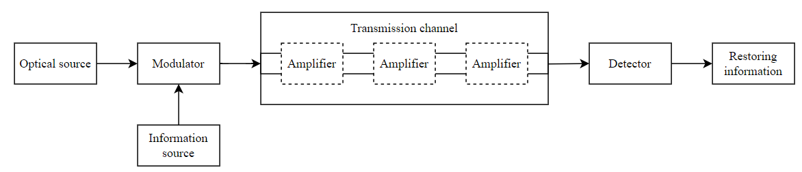

Welcome to application documentation
This is documentation to application for simulating optical communication that uses optical fibers. Purpose of the application is to demonstrate and visualize influence of some parameters of parts of optical communication model. Simulations should also provide better understanding of optical modulation and optical signal detection.
This application was created as part of a bachelor thesis. Theme of the thesis was Laboratory exercises: Modulation in optical networks.
Note: Application performance has not been optimized.
Function dependencies
Whole application was coded in Python language and is based on OptiCommPy package. This package was designed for simulating optical fiber communication with Python. It has many models and functions that are related to the communication. The simulating core of the application was built and inspired by this package.
OptiCommPy is still under active development and the application was created with version 0.7.0-alpha. Github page of the package can be visited on https://github.com/edsonportosilva/OptiCommPy. In case of unclear understanding of the simulation process I recommend to visit OptiCommPy github and documentation.
Graphical user interface was created with combination of Tkinter and CustomTkinter packages. CustomTkinter is based on regular Tkinter but provides some pre-prepared modern widgets designs. CustomTkinter project can be visited on https://github.com/TomSchimansky/CustomTkinter.
Basic concept
Application was built on an idea of optical fiber communication model. The main thing in the application is displayed communication model, whose properties by changed by user. Besides these properties of the model user can also change some parameters of the transmission signal, such as modulation format, modulation order and also transmission speed which isn't controlled directly but by transmission symbol rate. The communication model consists of optical source, modulator, transmission channel and optical detector. In addition optical amplifier can be optionally added to the transmission channel. Scheme of communication model is showed below.
Communication model

Which signal property user cannot control are data to transmit. On each start of the simulation a new pseudo-random bit sequence is generated which represents the information.
Installation
Note: Installed Python is needed.
Because project contains only source scripts the recommended installation is:
-
Clone github repository of the project
git clone https://github.com/jurkovicmartin/OpticalSimulation -
Install OptiCommPy package. The package will also install other needed packages like numpy, matplotlib, etc.
pip install OptiCommPy -
Install Tkinter and CustomTkinter package
pip install tk pip install customtkinter -
This should be everything needed for compilation.
Now run "app.py" script to start the application. You can run it with some python code editor or by console.
For console start navigate to the folder where the project is located a type command
python app.pyor
py app.py